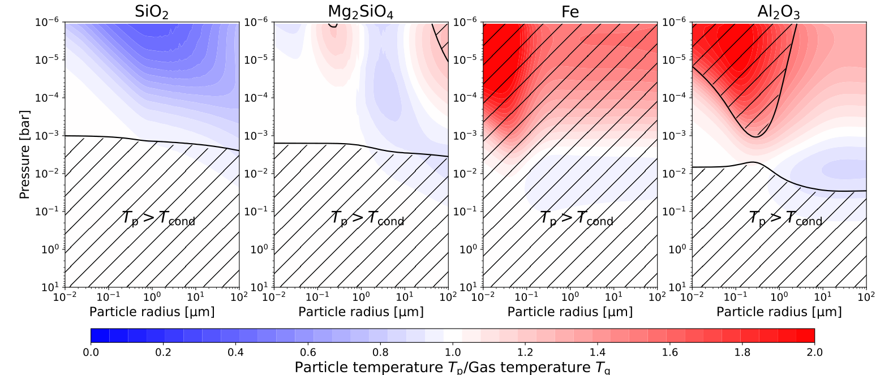

The question: which temperature matters?
Cloud composition is often inferred by comparing the local gas temperature with a material’s condensation temperature. In a tenuous upper atmosphere, however, collisions with gas molecules become too infrequent to keep a cloud particle at the same temperature as its surroundings.
The particle then finds its own temperature through the balance of absorbed starlight and emitted infrared radiation. The central question is whether a candidate cloud material can stay cool enough to survive under that balance.
From optical properties to particle temperature
The model uses wavelength-dependent absorption efficiencies calculated with Mie theory for eight condensates: KCl, ZnS, Na₂S, MnS, SiO₂, Mg₂SiO₄, Fe, and Al₂O₃. Different materials absorb stellar light and emit thermal radiation with very different efficiencies.
Here C_abs is the absorption cross section, F_λ is incident spectral flux, and B_λ is the Planck function at the particle temperature T_p. The equation balances absorbed stellar energy with emitted thermal radiation.
For the pressure-dependent calculation, gas–particle collisions are included as an additional exchange of energy. This connects the radiative limit high in the atmosphere to the regime where particles more closely follow the gas temperature.
My numerical workflow
I implemented absorption calculations, integrated wavelength-dependent heating and cooling, and solved for the particle temperature. The published calculation uses trapezoidal integration and a bisection search for the equilibrium temperature.
Parameter sweeps vary material, particle size, stellar spectrum, and irradiation. Comparing the resulting temperature with each material’s condensation temperature produces stability boundaries. I analyzed these sweeps and led the first-author paper.
- Absorption → spectral heating and cooling → equilibrium temperature → stability map.
- Python, NumPy, SciPy, pandas, and Matplotlib support the calculations and analysis.
What the model shows
The results separate into composition-dependent temperature behaviors. Silicates such as SiO₂ and Mg₂SiO₄ can remain comparatively cool across a broad range of the conditions explored, while the sulfides ZnS, Na₂S, and MnS can be heated to sublimation even for temperate planets.
WASP-17b and HD 189733b fall in the modeled stable regime for SiO₂ clouds, consistent with recent JWST observations. In the pressure-dependent WASP-17b calculation, Fe clouds are unstable on the dayside and Al₂O₃ clouds survive only in a limited region.
The practical implication is that a gas-temperature profile alone can allow cloud compositions that are unstable once the particle’s own radiative temperature is considered.
Reading Figure 9
Figure 9 shows the particle-to-gas temperature ratio for SiO₂, Mg₂SiO₄, Fe, and Al₂O₃ in the WASP-17b calculation. The horizontal axis is particle radius and the vertical axis is atmospheric pressure.
Blue regions indicate particles cooler than the surrounding gas; red regions indicate hotter particles. Hatching marks regions where the particle temperature exceeds the condensation temperature. The contrast between panels makes the role of composition visible.

Figure 9. Color shows particle temperature divided by gas temperature. Blue is cooler, red is hotter, and hatching indicates sublimation.
Shefferson-Nagata & Ohno (2026), Radiatively Controlled Thermal Stability of High-altitude Clouds in Exoplanetary Atmospheres, The Astrophysical Journal 1005, 210, Fig. 9. CC BY 4.0. Figure cropped from the published page. DOI ↗ · CC BY 4.0
View full-size figure ↗Scope, publication, and public code
This is a radiative–thermodynamic stability model. The calculation uses idealized spherical particles and an approximate stellar spectrum; it does not self-consistently solve the feedback of clouds on the entire atmosphere. Optical constants, stellar ultraviolet radiation, and finite sublimation timescales are important directions for further work.
Shefferson-Nagata, T. M., & Ohno, K. (2026). “Radiatively Controlled Thermal Stability of High-altitude Clouds in Exoplanetary Atmospheres.” The Astrophysical Journal, 1005, 210. DOI: 10.3847/1538-4357/ae7d27.
The linked GitHub repository is a partial reconstruction of research scripts. Some original input data have not been recovered, so it is not a complete package for reproducing every figure in the paper.